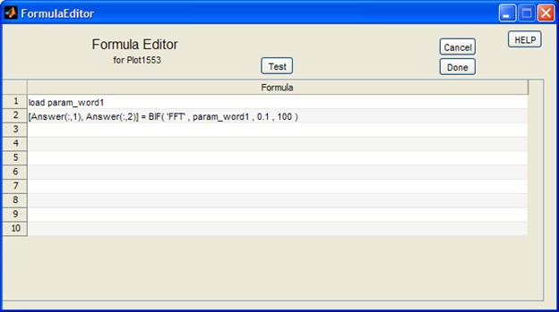

Formula Editor for Plot1553
Summary
The Formula Editor is specifically written
to work with the Plot1553 tool.
Therefore it has a couple of specific rules to adhere to in order for it to generate
the correct output so that Plot1553 can create a plot from the formula’s
output.
For the
most part Formula Editor is exactly like working in the Matlab command window.
Therefore apart from the load
command that is slightly modified and a couple of constraints if you are trying
to do exotic Matlab tricks, you must use the Formula Editor as if it is a
Matlab command window with all the normal commands at your disposal.
For the more advanced
users: Formula
Editor takes everything you type in the Formula window, modify all commands
starting with load so that they will
have the correct path and file extension to get the actual data, and then just
concatenate all the lines separated by semicolons into one big string which is
then fed to the Matlab eval statement.
Quick rule guide
- First you have to load the data, use the same names
as you would see in the Word
column of Plot1553 – the
Formula Editor will automatically use the same path as specified in Plot1553 under Data Directory and will
automatically add the File ID
and File extension. Therefore make sure those fields are correctly filled in under the Plot1553 tool otherwise the Formula Editor won’t find the data.
- The output of Formula Editor that you want to
see plotted in Plot1553 must be
in a variable called Answer
which must consist of 2 columns, with the Time stamp in the first column and the Data in the second column. Except if you want to plot things
in your own windows using the plot or subplot commands, then add the line Answer = ‘NP’ (NP = No Plot). This
will indicate to plot1553 that it must not also try to plot this formula.
- There is a built in functions BIF
which will be expanded over time.
- Use the Test button to check the code before clicking on Done. If the code doesn’t run here
it won’t run under Plot1553
Example:

Line 1: Load
the target longitude file with the Most significant part of the data
Line 2: Load
the target longitude file with the Least significant part of the data
Remember the loaded parameters exist
of 2 columns, the first column have the Time stamp and the second column have
the Data.
Line 3: First assign the Time stamp data of tgtlong1_l to Answer.
Line 4: Add the Data column of tgtlong1_l and the Data column of tgtlong1_m together and assign it to the Data column of Answer.
The Answer variable will now have 2 columns
the first column is the Time stamp data of the tgtlong1_l parameter and the second column is the combined (added) data from both parameters. Plot1553 will now plot the Answer variable when executed
More advanced Example:
This is
just to show that the use of IF statements and FOR and WHILE loops are totally
acceptable

Note: For Matlab users - semicolons at
the end of the lines are not important as the Formula Editor will automatically
add semicolons after each line when evaluating the whole window.
Using Formula Editor
Starting Formula Editor
Formula Editor is automatically started when clicking on the Add Formula button in Plot1553.
It will
also start when an existing #FORMULA#
is highlighted in the Plot1553 tool
and you click on the Edit Formula
button.

Although
you don’t have to, it will make life easier if you ensure that the following
fields are filled in correctly in Plot1553 before starting the Formula Editor:
- Data Directory
- File ID:
This is
necessary if you want to test your code inside Formula Editor, it uses these
fields to find the actual data you’re looking for.
Understanding
the environment
The only
files that can be sensibly loaded and interpreted by Plot1553 and Formula
Editor are files that has the following format:
- 2 columns
- 1st column has the
time stamps
- 2nd column has the
Data points corresponding to the Time stamps
As an
example lets create 2 parameters Data1
and Data2 each with 3 Time stamps
and 3 data points. The way Matlab represents these parameters once loaded:

This screen
shot shows the actual contents of both parameters

From this
screen notice that Matlab shows the size of each parameter as 3x2 meaning 3
rows by 2 columns
The way to
access / process this data in Matlab:
To get the
value from the 3rd row 2nd column of Data2 type in: Data2(3 , 2)
This will
return in our example the number 45.
To get all
the values of column 2 for Data2 type in: Data2(
: , 2)
This will
return for our example:

If you only
want to get a subset of data like only the last 2 rows of Data1’s second column
type in: Data1(2:3, 2)
This will
return for our example:

The reason
why you need to understand this is because when you are loading to parameters
in the Formula Editor environment they WILL always be in that format, therefore
if you think you can just say NewData = Data1 + Data2 you will get the
unexpected result of also adding the times together instead of just the data.
So to keep
the time from being added and to just add the corresponding Data points you
have to do it as follows:
First copy
the Time column of any of the two parameters to a new parameter, in this case a
parameter called Answer
Answer( : , 1 ) = Data1( : , 1 ) % Note only the first column (the
time column) is copied to Answer
Now add the
Data column elements of Data1 to the
Data column elements of Data2 and
put it into the Data column of Answer:
Answer( : , 2 ) = Data1( : , 2 ) +
Data2( : , 2)
Example:
The Formula Editor Output
The end
goal of Formula Editor is to supply Plot1553 with a single parameter of the
same format as the normal parameters so that Plot1553 can plot this parameter
as it would plot any other.
For this
reason the parameter name Answer is
reserved for exactly that. Plot1553 will look for this parameter Answer and plot it, if it can’t find it
you will receive an unexpected plot of a small house (I was bored, but it
should get your attention)
And for all
the reasons explained in Understanding
the environment Answer must have the format of 2 columns (Time, Data)
Loading parameters
These files
are typically stored in a specific directory using the following structure:
DIR\PARAM.FID.EXT
Where :
DIR is the path to the directory
PARAM is usually the parameter name as defined in
the Aircraft ICD
FID is usually the 3 digit flight number
pertaining to the data
EXT
can be .mat or .txt
Example:
c:\Rooivalk
Data\Aircraft_673\flight_090\mss_az.090.mat
DIR c:\Rooivalk Data\Aircraft_673\flight_090\
PARAM mss_az
FID 090
EXT
mat
Formula
Editor will automatically add the correct DIR, FID and EXT therefore when
loading parameters only use the PARAM part of the file.
Example:
To load the
file c:\Rooivalk
Data\Aircraft_673\flight_090\mss_az.090.mat in the Formula Editor only type
in:
load mss_az
The rest of
the info comes from the Plot1553 environment as explained under Starting Formula Editor
Built In Functions
USAGE:
[output_var1, output_var2, output_var3,
…] = BIF( ‘Function_name’, input_var1, input_var2,…)
Example:
To call the build in FFT function:
[Freq, Ampl] = BIF( ‘FFT’, Data, HP, SampleRate)
So far there are only 2 BIF
functions:
IPDat
- function takes two sets of with different
lengths and interpolate points so that you end up with two sets of data that is
of equal length.
FFT – Perform a FFT based on the format of the
1553 data
IPDat function
InterPolateData
This function takes two sets of data
from the 1553 bus with different lengths and interpolate points according to
the time stamps for each parameter so that you end up with two sets of data
that is of equal length and that have corresponding time stamps. This is useful when you have to
perform calculations for instance with a 50Hz parameter and a 12.5Hz parameter.
The IPDat function will interpolate data for the one
file so that both files have the same lengths with corresponding Time stamps.
USAGE:
[Data1N, Data2N, Data2R] = BIF(’IPDat’,Data1,
Data2)
Data1 and Data2 is the 2 parameters that must be
converted to have the same amount of Data points and the same Time Stamps
Data1N and Data2N will be the new (bigger) files
with all the original data of each file but with additional data points where
the Time Stamps had to be filled in. If none of the Time stamps in the two
original 2 files correlated the new files will each have the combined length of
the two original files.
Data2R is
the much more useful output in general, because it is a reduced version of Data2N which will have the same Time
stamps and amount of Data as the original Data1
Therefore in general use the
following form of this function:
[~, ~, Data2R] = BIF(’IPDat’,Data1, Data2)
Example:
You want to multiply the rpmfte11 parameter with the tqeng1_1 parameter to calculate torque.
Unfortunately the rpmfte11 parameter
is a 50Hz parameter resulting in this case in a size of (94446x2) versus the
25Hz tqeng1_1 parameter in this case
having a size of (47224x2).
Using the IPDat function
[~, ~, tqeng1_1] = BIF( ‘IPDat’ , rpmfte11 ,
tqeng1_1);
The new tqeng1_1 parameter will now have the same length and corresponding
Time Stamps as the rpmfte11
parameter

FFT function
For generating a FFT from a set of
1553 data
USAGE:
[Freq, Amplitude]
= BIF(’FFT’, Data, HP, SampleRate)
The function will return a Freq array for
the X axis and the Amplitude array
for the Y axis.
As minimum input it needs the Data parameter consisting, as per
normal plot1553 data, out of 2 columns first the Time data and then the
Amplitude data. The FFT function will then establish the Sample rate from the
Time data. If for some reason the Time data is not good, the SampleRate can
be specified specifically by the user. To avoid the usual large spike around
zero in the graph you can add a High Pass filter with variable HP. The FFT function will then disgard all data under this frequency to give a more
sensible plot
Example:
For the typical plot1553 format you want
the Freq data in Answer(:,1) and the Amplitude data in Answer(:,2)
The Data
is from param_word1.
We want to throw away all Frequencies
below 0.1 Hz.
We specify that the SampleRate was 100Hz.
[Answer(:,1),
Answer(:,2)] = BIF( 'FFT' , param_word1 , 0.1 , 100 )

If you want to omit a parameter say for
instance the HP parameter use empty square brackets eg:
[Answer(:,1),
Answer(:,2)] = BIF( 'FFT' , param_word1 , [ ] , 100 )
General usage will be:
[Answer(:,1),
Answer(:,2)] = BIF( 'FFT' , param_word1 , 0.1)
Or
[Answer(:,1),
Answer(:,2)] = BIF( 'FFT' , param_word1 , 0.1, [ ])
Leaving the SampleRate to be calculated by
the FFT function from the Time file information
Known Bugs
Enough to keep a small
team of developers busy – unfortunately I’m only one guy doing this part time
- Don’t use comments in the
Formula Editor, eval doesn’t like that – must still fix it.
- Formula Editor can currently
only work with files that has the .mat
extension.